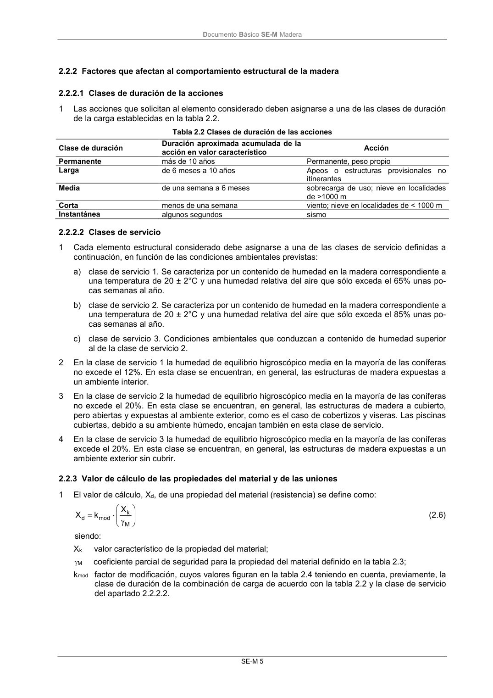

DB-SE-M · 2.2.2.2 Clases de servicio · versión 2019-12-20 · capa oficial
Formatos: JSON compacto · Markdown · PDF fuente
Ámbito del documento · texto del ámbito · documento y tablas
ID técnico a0032 · PDF pág. 11 · jerarquía no validada por persona · contrastado con el literal de la página 11 (candidato tipográfico); no validado por persona · padre: raíz
2.2.2.2 Clases de servicio 1 Cada elemento estructural considerado debe asignarse a una de las clases de servicio definidas a continuación, en función de las condiciones ambientales previstas: a) clase de servicio 1. Se caracteriza por un contenido de humedad en la madera correspondiente a una temperatura de 20 ± 2°C y una humedad relativa del aire que sólo exceda el 65% unas po- cas semanas al año. b) clase de servicio 2. Se caracteriza por un contenido de humedad en la madera correspondiente a una temperatura de 20 ± 2°C y una humedad relativa del aire que sólo exceda el 85% unas po- cas semanas al año. c) clase de servicio 3. Condiciones ambientales que conduzcan a contenido de humedad superior al de la clase de servicio 2. 2 En la clase de servicio 1 la humedad de equilibrio higroscópico media en la mayoría de las coníferas no excede el 12%. En esta clase se encuentran, en general, las estructuras de madera expuestas a un ambiente interior. 3 En la clase de servicio 2 la humedad de equilibrio higroscópico media en la mayoría de las coníferas no excede el 20%. En esta clase se encuentran, en general, las estructuras de madera a cubierto, pero abiertas y expuestas al ambiente exterior, como es el caso de cobertizos y viseras. Las piscinas cubiertas, debido a su ambiente húmedo, encajan también en esta clase de servicio. 4 En la clase de servicio 3 la humedad de equilibrio higroscópico media en la mayoría de las coníferas excede el 20%. En esta clase se encuentran, en general, las estructuras de madera expuestas a un ambiente exterior sin cubrir.

PDF fuente redistribuible: copia fiel enlazada en esta página (SHA256 verificado).